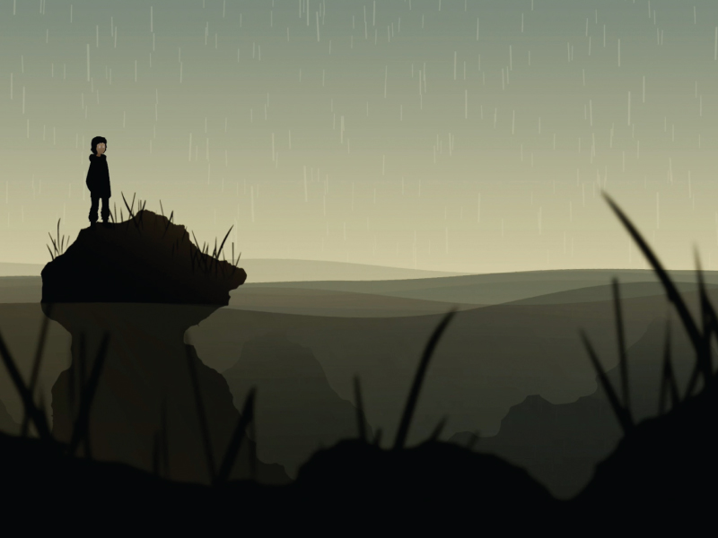

Adobe After Effects CC
Friday, 23rd October 2015Adobe After effects is a visual effects and motion graphics software used widely within the design Industry. I will be testing and playing about with animation using this particular software. I will be creating a few art pieces and testing motion using my basic animation skills. I have used After Effects in the past, but I haven’t had much practice.
Game Concept
I had a game concept in mind that involved a young man standing on an emerged island in a flooded landscape. The character will be part of a somewhat time lapse from day to night as rain falls and the water ripples.The main focus on the water movement, grass movement, the rain and the sky transition.

The water
Thankfully After Effects has a list of really helpful list of Effects & Pre-sets. Which will come to play when simulating a water effect throughout the animation. When creating the water I simply imported a rectangular vector file into the composition. I applied the Wave Warp effect, which creates motion within the shape using sine.
Pirate ship icon

grass
Zbrush
This week I set myself a goal of learning some 3D sculpting using zbrush. I have never tried making 3d objects before, but I have always been interested in the medium.
First attempt
For my first attempt I just jumped into zbrush barely knowing anything, just how to sculpted into a sphere. The finished product didn’t end up the best as it was very low poly and just looked overall kinda crappy.